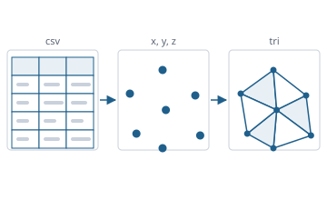

From the CSV cell to the triangle mesh – one data layer for every application
Function overview for the presentation of the envisionz framework, as of 28 Sep 2026. Tables from CSV, Tecplot and HDF5,
the unit system, storage in H2, computed columns, slices and grids for charts, triangulation in 2D and 3D,
comparison of two data states. No user interface. For each method: purpose, API, use in the framework, applications, examples.
The examples are shortened.
Many API names are German (e.g. Zahlenleser = number reader, Einheitentafel = unit table, Randverfahren = boundary method, Gitterfinder = grid finder); they are shown unchanged.

Principles of the module
Zahlenleser for file data, Eingabezahl for typed input – instead of scattered replace(',', '.'). The probes record what happens today, including where it goes wrong.CSV and the in-memory table envisionz.data.csv
CsvParser, CsvTypeDetector, CsvWriter, LoadedTable, ColumnSpec
RFC 4180 without a third-party library: quoting, multi-line fields, selectable delimiter and charset, findings instead of silent repair. Type detection looks at the first 100 rows and recognises INTEGER, DOUBLE, TIMESTAMP, VARCHAR, with decimal point and decimal comma. LoadedTable holds the table as text, with unit information per column, and offers the transformations of the 2020 table tools.
Methods
new CsvParser(trenner[, zeichensatz]).parse(pfad)→ParseResult:header,rows,befundenew CsvTypeDetector().detectAndApply(tabelle),detect(...),guess(zelle)LoadedTable:columns(),rows(),valueAt(r, c),transposed(),blockTransfer(),withoutEmptyColumns(),withSiValues(registry)ColumnSpec: name,ColumnType, quantity kind, source unit, alias,displayLabel()CsvWriter.write(tabelle, trenner, pfad[, einheitenkopf])– headerNAME [unit]
Used in
What for
Every file that enters an application as a table: test-bed data, cycle calculations, map points.
Example – the loading path as CsvLoadPanel takes it
CsvParser.ParseResult res = new CsvParser(';').parse(datei);
List<ColumnSpec> cols = new ArrayList<>();
for (String h : res.header) cols.add(new ColumnSpec(h, ColumnType.VARCHAR));
LoadedTable t = new LoadedTable(cols, res.rows, datei.toString());
UnitHeaders.applyHeaderConvention(t, registry); // 1. header "T30 [K]"
UnitAssignmentStore.apply(t, UnitAssignmentStore.load(datei)); // 2. sidecar file
QuantityNameDefaults.applyNameDefaults(t); // 3. name heuristic
new CsvTypeDetector().detectAndApply(t);
LoadedTable si = t.withSiValues(registry); // once, as a copyNumbers from text envisionz.data.zahl
Zahlenleser and Eingabezahl – the one place
Zahlenleser reads file data (CSV, H2 cells, table cells, envelope files), Eingabezahl typed text. The heute (“today”) forms reproduce the former rule verbatim, so that consolidating them changed no behaviour. The house rule with an explicit notation is ready. Background, formulas and pseudocode →
Methods
Zahlenleser.heute(roh[, ersatz]),heuteEndlich(roh),istZahlHeute(roh)Zahlenleser.lies(roh, Schreibweise)–STRENG,DEUTSCH,ENGLISCH; anything that does not fit givesnullEingabezahl.lies(roh[, ersatz]),Eingabezahl.heute(roh[, ersatz])
Used in
What for
Interpreting input fields and file cells uniformly; switching to the coming stricter rule in one place.
Example – today and under the house rule
Double a = Zahlenleser.heute("1,500"); // 1.5 (today's rule)
Double b = Zahlenleser.lies("1,500", Zahlenleser.Schreibweise.ENGLISCH); // 1500.0Zahlenleser.lies(roh, Schreibweise) has no caller yet; the probes measure today that "1,500" in a comma-separated file is read as 1.5.The unit system of the workspace envisionz.data.units
UnitRegistry, QuantityKind, UnitProfile
Every unit linear-affine to the SI base of its quantity kind (factor·v + offset), 22 quantity kinds from temperature via flow function to reduced speed. Three profiles: SI, Imperial and RR, the historic mixed system with K, psia and CHU/lb. Unknown units are returned unchanged – nothing is guessed. Background, formulas and pseudocode →
Methods
convert(wert, von, nach),convertDelta(delta, von, nach),toBase,fromBasekindOf(einheit),unitsFor(art),alternativesFor(einheit),isConvertible(a, b),addUnit(...)QuantityKind.byId(id),baseUnit()UnitProfile.si(),imp(),rr(),unitFor(art),withUnit(art, einheit)
Used in
What for
Making measurements and calculations in different unit systems comparable, display in SI, Imperial or RR.
Example – absolute and as a difference
UnitRegistry reg = new UnitRegistry();
double t = reg.convert(20.0, "°C", "K"); // 293.15
double dt = reg.convertDelta(10.0, "°C", "K"); // 10 – without offset
String p = UnitProfile.rr().unitFor(QuantityKind.PRESSURE);UnitHeaders, UnitAssignmentStore, QuantityNameDefaults – where a column gets its unit
Order: header before sidecar before heuristic. The header NAME [unit] is the explicit declaration; the sidecar <name>.units.properties next to the CSV remembers quantity kind, unit and alias per column; the heuristic recognises station identifiers of cycle calculations (T30, P25, …) and sets only the quantity kind.
Methods
UnitHeaders.applyHeaderConvention(tabelle, registry)UnitAssignmentStore.load(csv),apply(tabelle, gespeichert),save(csv, tabelle, optionen),sidecarFor(csv)QuantityNameDefaults.guess(name),applyNameDefaults(tabelle)
Used in
What for
Finding units once assigned again when the same file is loaded next time.
Storage in H2 envisionz.data · envisionz.data.h2
DataStore, H2DataStore, Einheitentafel, SqlLog, Tabellenwahl
The only DataStore implementation stores tables in an H2 file database: writing with a primary key in batches of 1000 rows, identifiers always quoted, arbitrary SELECTs for slicing and binning. The database closes when the last connection to the file goes – no hard SHUTDOWN, so that parallel readers are not cut off. Units live in a side table <table>_UNITS, read and written in one place.
Methods
open(pfad),close(),writeTable(name, tabelle),readTable(name),query(sql),execute(sql)listTables(),dropTable(name),tableExists(name);cacheKb(),setzeCacheKb(kb)Einheitentafel.lies(db, tabelle),schreibe(db, tabelle, spalten),wendeAn(eintraege, spalten)SqlLog.setEnabled(an),entries(),addListener(l);Tabellenwahl.datentabellen(alle),waehle(alle, bevorzugt…)
Used in
What for
Large data collections as a working database; operating lines, calculation runs, merged measurement series.
Example – store and read back filtered
try (H2DataStore db = new H2DataStore()) {
db.open(Path.of("arbeit/messung")); // without extension, H2 appends .mv.db
db.writeTable("MESSUNG", tabelle); // replaces a table of the same name
Einheitentafel.schreibe(db, "MESSUNG", tabelle.columns());
LoadedTable teil = db.query("SELECT \"T30\", \"P30\" FROM \"MESSUNG\" WHERE \"N\" > 0.9");
}LOCK_MODE=0 means: never open the same file from two processes; several connections within one JVM are fine.Computed columns envisionz.data.formula
Formula and Ausdruck – own reader since 26 Sep 2026
Columns are addressed as {{plain name}}, without an upper limit. Operators + - * / ^ % //, factorial, absolute-value bars, implicit multiplication, pi and e, the trigonometric, hyperbolic, exponential and rounding functions, plus min, max, atan2. It replaces the former CAS library; the deliberate deviations are listed in the Javadoc, above all sin(x)^2 = (sin x)².
Methods
Formula.compile(vorlage),referencedColumns(),eval(spaltenwert),source()Ausdruck.lies(text),liesMitNamen(text),variablen(),wert(belegung),funktionen()
Used in
What for
Derived quantities in the chart, such as pressure ratio, coefficients, corrected speed.
Example – pressure ratio from two columns (column names illustrative)
Formula f = Formula.compile("{{P30 [Pa]}} / {{P25 [Pa]}}");
double pr = f.eval(name -> zeile.get(name)); // ToDoubleFunction<String>Slices, grids, statistics envisionz.data.slice · envisionz.data.analysis
SliceExtractor, SliceSql, Regrid, GridSmoother
From a table comes a point slice (x, y, f) with constraints and a z window, optionally with row numbers and extra columns. For databases of a gigabyte and more, SliceSql generates the SQL that lets H2 filter and bin to pixels itself. Regrid maps scattered points onto a grid by inverse distance weighting and fills every cell; smoothing leaves NaN holes empty unless filling is requested explicitly. Background, formulas and pseudocode →
Methods
SliceExtractor.extract(tabelle, spec, anfrage),ausSpalten(spalte, n, spec, anfrage),fromResult(...)ChartSpec.line(...),field(x, y, f, bedingungen),volume(...),mitZusatz(spalten…);SliceRequest.NONE,slab(z, halb)SliceSql.where(...),scatter(...),distinct(...),binned(tabelle, x, y, f, where, x0, y0, bx, by)Regrid.toGrid(schnitt, RegridOptions.defaults().withGrid(nx, ny));GridSmoother.gaussian(g, sigma[, loecherFuellen])
Used in
What for
Contour plots from measurement clouds, slices through maps at a fixed third quantity, charts over databases that do not fit into memory.
Example – field slice and grid
ChartSpec spec = ChartSpec.field(ix, iy, iF, List.of(new StructureCheck.Constraint(iN, ">=", 0.9)));
ScatterSlice s = SliceExtractor.extract(tabelle, spec, SliceRequest.NONE);
GridSlice g = Regrid.toGrid(s, RegridOptions.defaults().withGrid(200, 100));ParameterStats and StructureCheck
Statistics per column (count, distinct values, minimum, maximum, equidistant) and the question whether the points form a grid or a cloud – which decides whether to contour directly or to triangulate first.
Methods
ParameterStats.analyze(tabelle, distinctCap, relTol),analyze(db, tabelle[, …])→ColumnStatStructureCheck.check(tabelle, x, y, z, bedingungen, relTol)→Result,AxisInfo,Constraint
Used in
What for
Detecting empty and constant columns, suggesting a chart type, offering filter values.
Triangulation in 2D envisionz.data.tri
Triangulierverfahren, BowyerWatson, SweepHull, GuibasStolfi, ConstrainedDelaunay
Three Delaunay methods behind a registry – a new one is entered only there, and selection fields and probes pick it up by themselves. All compute normalised to [0,1] per axis with exact circumcircle tests; BowyerWatson with ghost triangles instead of super vertices, GuibasStolfi with guaranteed O(n log n). Constrained edges as well. At 1:1, 27:1, 33333:1 and 1:1000 the same set of triangles results. Background, formulas and pseudocode →
Methods
Triangulierverfahren.alle(),finde(kennung),erzeuge(kennung)–BOWYER_WATSON,SWEEP_HULL,GUIBAS_STOLFITriangulator.triangulate(x, y, f),triangulate(schnitt)→TriMesh(tris,adj)new ConstrainedDelaunay().triangulate(x, y, f, segmente)Geom.orient2d,inCircle,inTriangleCCW
Used in
What for
Contour plots from scattered measurement points, maps without a regular grid.
Example – via the registry
TriMesh netz = Triangulierverfahren.erzeuge("GUIBAS_STOLFI").triangulate(x, y, f);
System.out.println(netz.triangleCount() + " triangles");StructuredMesh and Gitterfinder – structure instead of Delaunay
With known indices the grid is split into triangles directly, holes included. Without index columns Gitterfinder reads (i, j) from the positions of the points: growth from a start point via predicted neighbour positions, rejected on contradiction, fracture edge or sheared reading. On 77 blocks of the machieve example grids: 56 recognised exactly, 21 rejected, none wrong.
Methods
StructuredMesh.build(x, y, f, iMax, jMax),ausZellen(x, y, f, gi, gj, block),merge(teile)Gitterfinder.finde(x, y)→Gitter(i, j, block, bloecke, zellen)ornull;untersuche(x, y)→Befund
Used in
What for
Showing CFD results and maps with speed lines without wrongly filled concave regions.
Example – try the structure first
Gitterfinder.Gitter g = Gitterfinder.finde(x, y);
TriMesh netz = (g != null) ? StructuredMesh.ausZellen(x, y, f, g.i(), g.j(), g.block())
: Triangulierverfahren.erzeuge(Triangulierverfahren.VORGABE).triangulate(x, y, f);Boundary methods and manual correction envisionz.data.tri
Randverfahren, AlphaShape, ChiShape, Nachbesserung
Delaunay covers the convex hull; the real boundary is often concave. AlphaShape discards triangles by circumradius or longest edge, measured in normalised space. ChiShape (Duckham et al. 2008) trims only from the boundary inwards, the boundary stays a simple polygon and no point drops out. Nachbesserung restores or discards individual triangles by hand, identified by the table rows of their corners. Background, formulas and pseudocode →
Methods
Randverfahren.anwende(netz, Einstellung)→Ergebnis(before, removed, orphaned …);KEINES,ALPHA,CHIAlphaShape.filter(netz, alpha, kriterium),autoAlpha(...),sortedValuesDesc(...)ChiShape.filter(netz, lambda),filterAbsolut(netz, schwelle),VORGABE_LAMBDA= 2.0Nachbesserung.anwende(basis, gefiltert, zeilen, liste),Ausnahme.von(art, a, b, c),treffer(...)
Used in
What for
Showing map and measurement regions without bridges across gaps; deciding borderline cases one by one.
Example – chi boundary with the default
ChiShape.Ergebnis e = ChiShape.filter(netz, ChiShape.VORGABE_LAMBDA);
TriMesh rand = e.netz(); // e.entfernt(), e.schwelle()Meshes and surfaces in 3D envisionz.data.tri
DelaunayTet, StructuredTets, IsoSurface3D, AxisSlice3D, HullSurface3D
Tetrahedralisation normalised per axis, with ghost tetrahedra and exact predicates; the output carries the raw values. For structured blocks StructuredTets splits every hexahedral cell directly into six tetrahedra (Kuhn/Freudenthal). On top: iso-surfaces by marching tetrahedra, axis-parallel cuts (triangle or quadrilateral per tetrahedron), the hull, colour bands on surfaces, surfaces from a height grid. Background, formulas and pseudocode →
Methods
new DelaunayTet().triangulate(x, y, z, f)→TetMesh;StructuredTets.build(x, y, z, f, iMax, jMax, kMax),mergeIsoSurface3D.surface(netz, niveau),surface(netz, skalar, niveau),levels(min, max, n)AxisSlice3D.slice(netz, achse, wert),slice2D(...);HullSurface3D.faces(netz)ContourBand3D.band(flaechen, niveaus),GridSurface3D.faces(...),FaceSplit.splitAt,clipKeep
Used in
What for
Volume charts of maps f(x, y, z), iso-surfaces in CFD fields, cutting planes.
Example – iso-surface of a point cloud
TetMesh tets = new DelaunayTet().triangulate(x, y, z, f);
List<double[]> flaeche = IsoSurface3D.surface(tets, 0.85);Tecplot data and layouts envisionz.data.tecplot · envisionz.data.tecplot.layout
TecplotReader, TecplotAsciiReader, TecplotTables
Binary files up to about 2001: Tecplot 6.x without a signature, all fields FLOAT32, verified byte for byte on a real 6.3 file; Tecplot 7.x (#!TDV) with a header after the published structure, data section locked until a test file is available. Newer formats are rejected with a message. Plus ASCII with POINT and BLOCK ordering and empty zones. The byte order is not stated in the file; it follows from the version marker.
Methods
TecplotReader.read(pfad[, optionen]),TecplotAsciiReader.read(pfad[, optionen])→TecplotDatasetTecplotDataset:variableNames(),zones(),requireVariable(name),describe()TecplotZone:iMax(),jMax(),readVariable(i),readAll(),readConnectivity()TecplotTables.toTable(ds[, mitIndexspalten]);TecplotReadOptions.builder()
Used in
What for
Taking over old flow and map results that exist only as Tecplot files.
Example – read one variable
TecplotDataset ds = TecplotReader.read(Path.of("feld.plt"));
float[] ma = ds.zone(0).readVariable(ds.requireVariable("Ma"));
LoadedTable t = TecplotTables.toTable(ds);TecplotLayoutReader, TecplotLayout, Layoutvorschlag, Layoutstil, Tecplotauszeichnung
Reads .lay files: frames, data files, active zones, axes with range and log scale, curves and texts; whatever is not interpreted ends up in ungedeutet(). From this comes a proposal of which columns belong on which axis, plus curve styles and colours and Tecplot's text markup (super- and subscripts, symbols).
Methods
TecplotLayoutReader.read(datei);rahmen(),achse(name),kurven(),texte(),ungedeutet()Layoutvorschlag.aus(rahmen, spaltennamen):xSpalte(),ySpalten(),befunde(),brauchbar()Layoutstil.kurvenstile(rahmen),diagrammtyp(rahmen);Tecplotauszeichnung.deute(roh),alsText(roh)
Used in
What for
Rebuilding existing Tecplot charts with their axes and styles instead of setting them up again by hand.
Bridge from HDF5 to the table envisionz.data.hdf5
Hdf5Tables and Hdf5Slices
Reads via the readers of framework-fileformats and builds a LoadedTable or directly a ScatterSlice. For plotting, the slice is the right way: a table holds every cell as text, 102 MB instead of 8 for a million values. Every method therefore has an explicit upper limit; beyond it comes an Hdf5TableException with zuGross(). Compound datasets yield one column per member.
Methods
Hdf5Tables.toTable(datensatz[, hoechstzahl]),toTable(gruppe[, laenge, hoechstzahl]),reihenlaengen(gruppe)Hdf5Slices.scatter(x, f),scatter(x, y, f),scatterAusMitgliedern(...),werte(datensatz),passendeReihen(gruppe, bezug)
Used in
What for
Using HDF5 wherever a CSV used to be: unit assignment, statistics, H2, chart.
Example – two datasets as a point slice
Hdf5File h = Hdf5File.open(Path.of("ergebnis.h5"));
ScatterSlice s = Hdf5Slices.scatter(h.dataset("/zeit"), h.dataset("/druck"));Comparing two data states and handing over envisionz.data.vergleich · envisionz.data.events · envisionz.data.interp
Morph – the difference plot
Pairs the points of two slices, via key columns or, failing that, via position, using grid buckets – linear instead of quadratic; neighbouring buckets are read too. From this: difference, relative deviation or ratio. Interpolating onto the mesh of the baseline is deliberately not built – it would partly yield computed instead of measured values. Background, formulas and pseudocode →
Methods
Morph.paare(a, b, schluesselA, schluesselB, toleranz)→Paarung(partner, ohnePartner, mehrdeutig)Morph.rechne(a, b, paarung, groesse, schwelle)→Ergebnis;Groesse:DIFFERENZ,RELATIV,VERHAELTNISMorph.einheit(groesse, einheit)
Used in
What for
Comparing two calculation states or measurement campaigns as a difference contour.
Example – relative deviation by position
Morph.Paarung p = Morph.paare(alt, neu, null, null, 1e-6); // no keys: by position
Morph.Ergebnis r = Morph.rechne(alt, neu, p, Morph.Groesse.RELATIV, 1e-9);TableAvailableEvent and Interp3D
The event hands a finished table to another application via the framework's EventBus, since 26 Sep 2026 with a target ("charts", "maps"; null means any receiver). Interp3D interpolates trilinearly on regular grids and by Shepard in point clouds.
Methods
new TableAvailableEvent(tabelle, quelle[, ziel]),fuer(appId)Interp3D.trilinear(x, y, z, f, xv, yv, zv),inverseDistance(punkte, xv, yv, zv, potenz)
Used in
What for
Opening EPDS results as operating lines in maps or as a chart in charts; values between support points in space.
Usage matrix in the framework
Which modules use which parts today, counted in the source code (excluding probes).
| Module | CSV / table | Numbers | Units | H2 | Formulas | Slice / analysis | Triangulation | Tecplot | HDF5 | Comparison / event | What for |
|---|---|---|---|---|---|---|---|---|---|---|---|
| app-charts | ● | ● | ● | ● | ● | ● | ● | ● | ● | Charts from CSV, H2 and Tecplot, contours, 3D, difference plot | |
| app-maps | ● | ● | ● | ● | ● | ● | Operating lines, spatial view of maps | ||||
| app-acft | ● | ● | ● | ● | Data sources, flight performance charts | ||||||
| app-epds | ● | ● | ● | ● | Merging and handing on measurement series | ||||||
| app-eqnparser | ● | ● | ● | Storing calculation runs | |||||||
| app-stats | ● | ● | ● | Statistics over H2 collections | |||||||
| app-neural | ● | ● | Training data | ||||||||
| app-pdfdigitizer | ● | ● | Storing digitised tables | ||||||||
| app-hdf5reader | ● | ● | ● | Handing on HDF5 as a table | |||||||
| app-settings | ● | Database cache size | |||||||||
| app-report | ● | Unit profiles in the operating-point report | |||||||||
| framework-swing | ● | ● | ● | ● | Load panels, input fields | ||||||
| framework-chart | ● | ● | Envelope files, iso-surface tool | ||||||||
| framework-reporttable | ● | Unit layer with registry |
Interp3D has no caller outside the probes. The Tecplot, formula, slice and comparison parts are used today by app-charts alone.